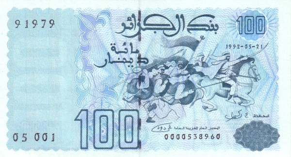
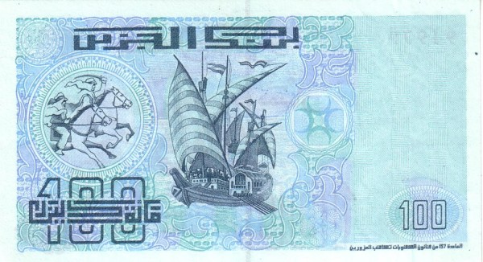
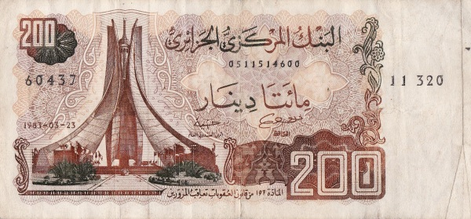
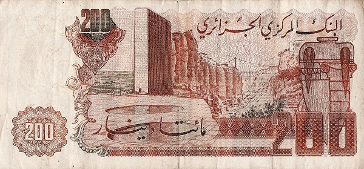
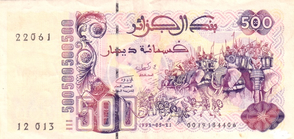
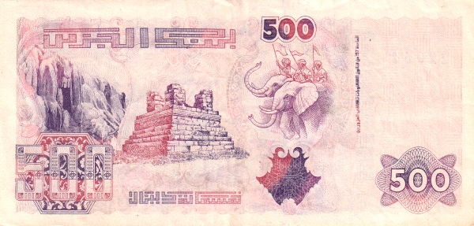
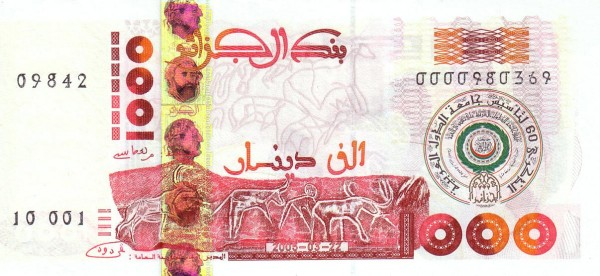
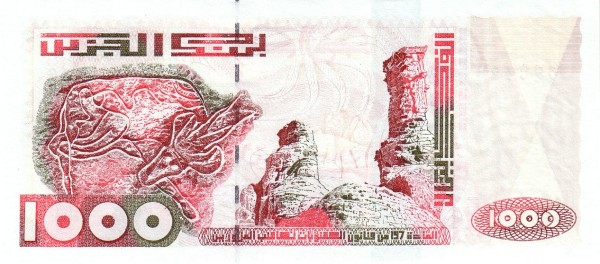
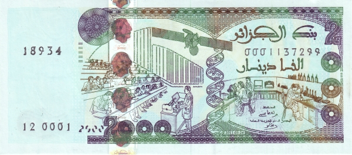
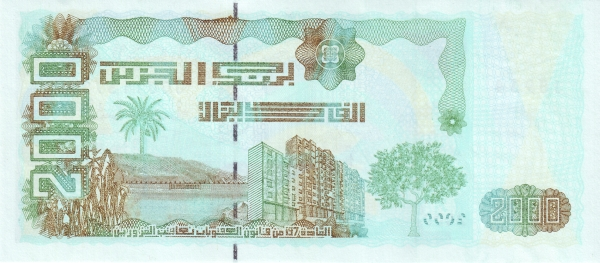

Алжир - Алжирский динар
100 динар
 Лицевая сторона - скачущие арабские воины
Обратная сторона - старинная парусная галера
200 динар
 Лицевая сторона - памятник славы и мученичества в Алжире
Обратная сторона - мост в Константине
500 динар
 Лицевая сторона - воины на слонах
Обратная сторона - римская гробница в Типасе
1000 динар
 Лицевая сторона - эмблема ЛАГ; наскальные рисунки с плато Тассилин-Адджер
Обратная сторона - плато Ахаггар; наскальное изображение антилопы
2000 динар
 Лицевая сторона - лекция в университете; двойная спираль ДНК; исследователи в лаборатории
Обратная сторона - бухта; многоэтажный жилой дом